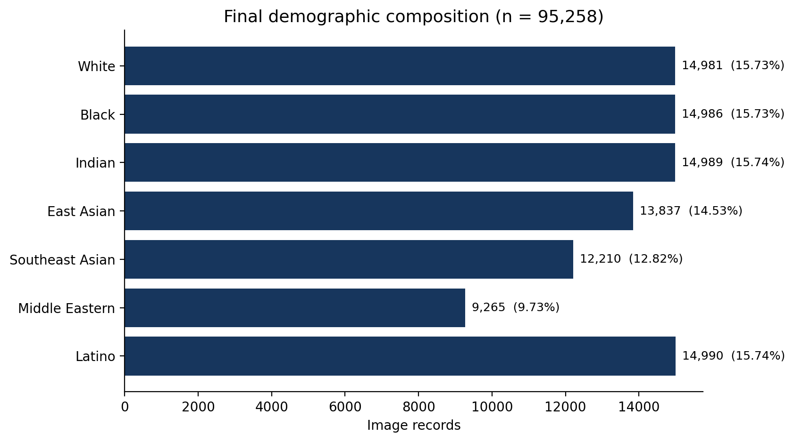
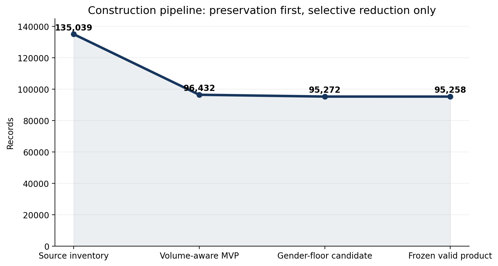
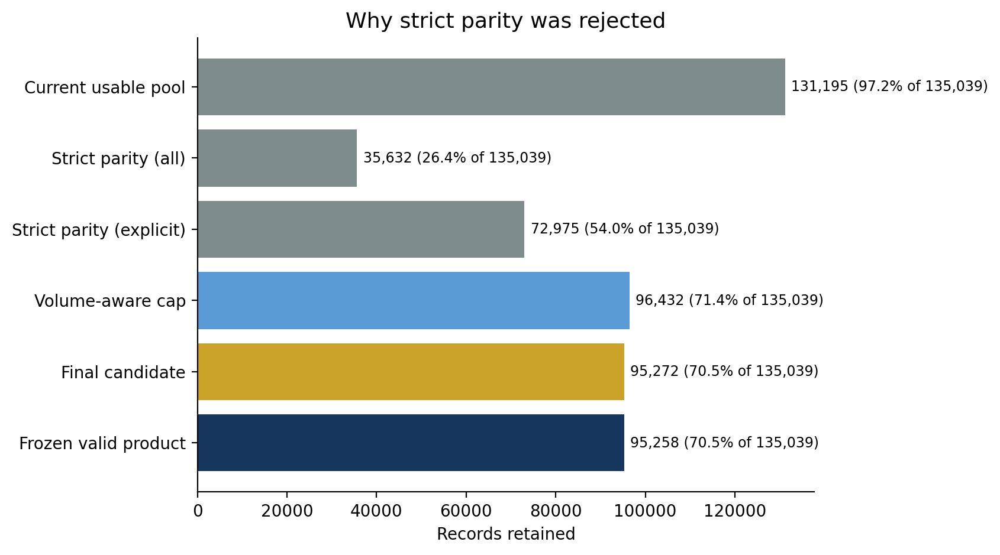
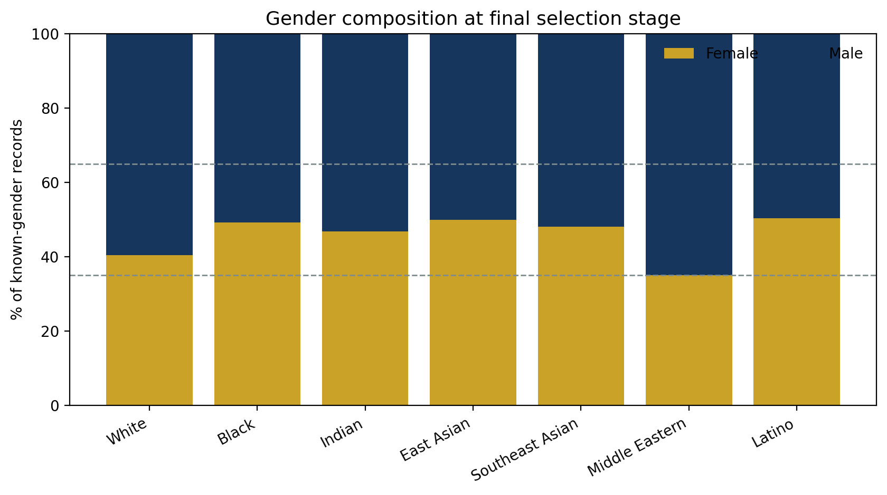
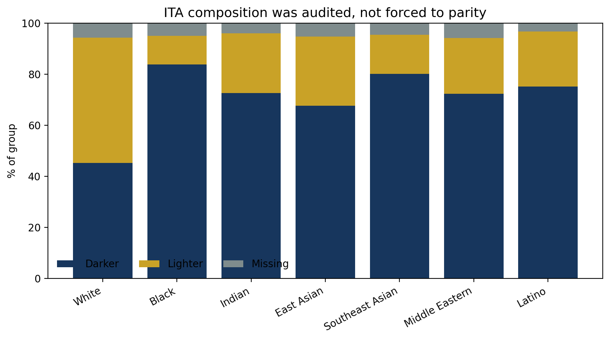
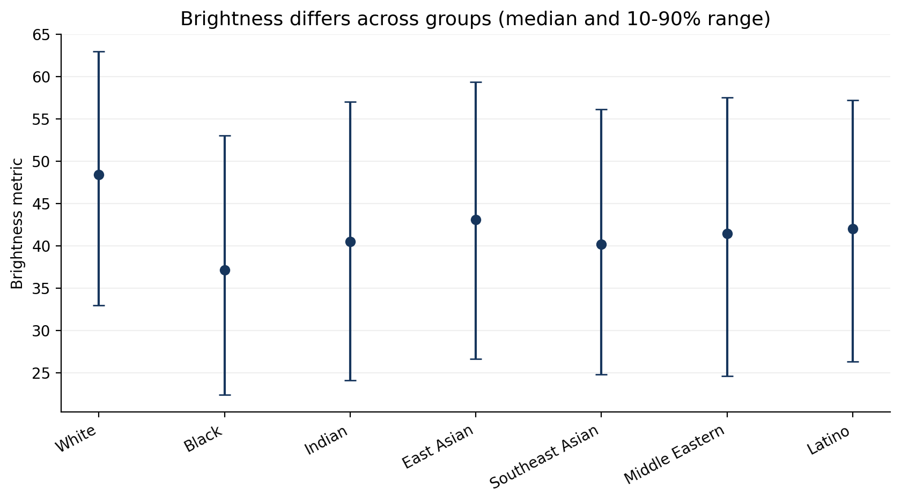
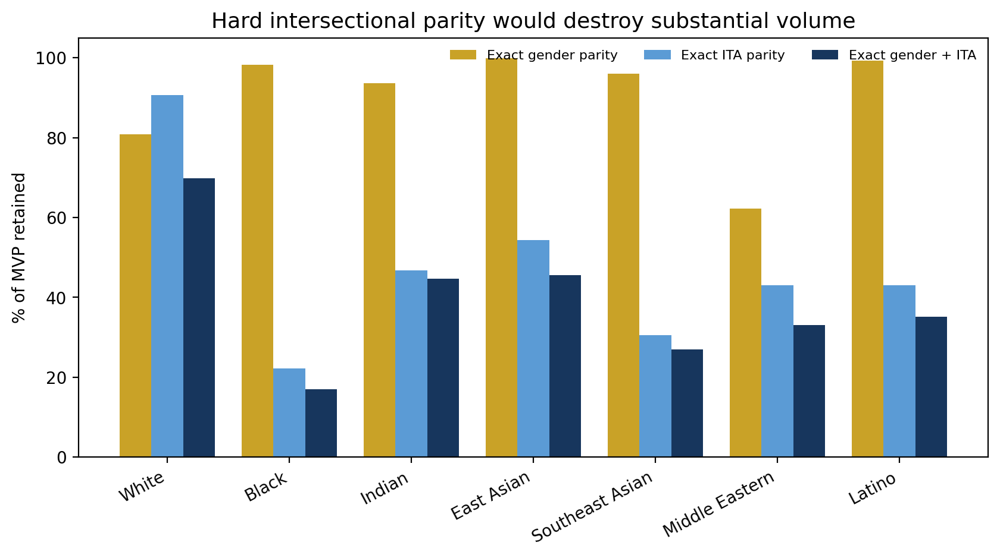
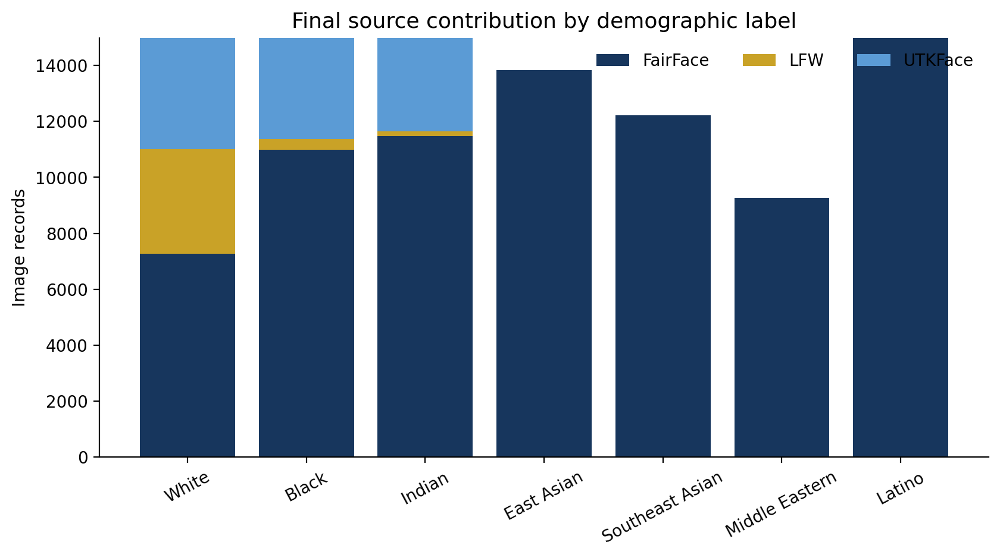

Only use distinctions supported by source metadata. No appearance-based manual relabeling.
Final product
What was created?
The final product is a 95,258-record manifest referencing valid source images. Images are not duplicated or altered. Every record retains source provenance and a harmonized demographic label.
The final seven labels are White, Black, Indian, East Asian, Southeast Asian, Middle Eastern and Latino. Broad Asian, Other and Unknown development records were not visually reinterpreted and are excluded from the explicit-label final product.
Safe project claim
“A provenance-preserving, harmonized and diversity-aware face-dataset manifest constructed from FairFace, UTKFace and LFW.”
Do not describe it as perfectly fair or universally representative.

Construction logic
Why this balancing strategy?
Strict parity was tested and rejected because it removed too much useful data. The selected approach prioritized volume + representation + within-group diversity + provenance.


Cap large groups at a volume-aware target instead of oversampling small groups.
Use a project-defined 35/65 floor. Only Middle Eastern required adjustment.
Exact ITA parity would destroy too much data and can erase within-group variation.
Final composition
Representation after harmonization
| Label | Records | Share |
|---|---|---|
| White | 14,981 | 15.73% |
| Black | 14,986 | 15.73% |
| Indian | 14,989 | 15.74% |
| East Asian | 13,837 | 14.53% |
| Southeast Asian | 12,210 | 12.82% |
| Middle Eastern | 9,265 | 9.73% |
| Latino | 14,990 | 15.74% |
The final 14-record reduction from 95,272 to 95,258 was a file-integrity step: invalid or missing paths were excluded.
Beyond counts
What else was audited?




Key decision
Exact joint gender × ITA parity would retain only 17.0% of Black records and 27.0% of Southeast Asian records. The project therefore treats ITA as an audit variable rather than a hard quota.
Traceability
Where do final records come from?

80,034FairFace · 84.02%
10,948UTKFace · 11.49%
4,276LFW · 4.49%
Main limitation: East Asian, Southeast Asian, Middle Eastern and Latino records in the final product are entirely sourced from FairFace. This is reported explicitly rather than hidden.
Responsible interpretation
Limitations
- Source taxonomies are inconsistent; harmonization cannot create missing demographic information.
- Broad Asian development records were excluded because a defensible fine-grained assignment was unavailable.
- Gender metadata is binary and incomplete as a representation of gender identity.
- Exact age and face-area coverage were too sparse to use as hard balancing constraints.
- ITA and brightness are influenced by imaging conditions and are not equivalent to race or ethnicity.
- Improved dataset composition does not by itself guarantee a fair trained model.
Visual QA
Label preview sheets
When this website folder is placed at results/harmonized_dataset/final_dataset_website, the cards below load the preview sheets already generated in the sibling FINAL_HARMONIZED_DATASET/previews folder.
Complete project data
All dataset data in one place
This section exposes the canonical 95,258-record manifest and links to the complete generated harmonization outputs. Use the filters to inspect individual records without opening the CSV manually.
Preparing data explorer…
Data & documentation downloads
Scope: “All data” here means all generated manifests, labels, audit tables, plots, documentation and preview sheets from the harmonization work. The original FairFace, UTKFace and LFW image files are not repackaged into the website; the canonical manifest points to their source image paths and preserves provenance.
Meeting-ready
How to explain the result to a supervisor or partner
- We audited 135,039 records before merging anything.
- We harmonized labels conservatively and preserved provenance.
- Strict parity was rejected because it discarded too much volume.
- A volume-aware cap reduced demographic dominance without oversampling.
- A 35/65 gender floor cost only 1,160 records and fixed the only major gender skew.
- ITA, brightness, contrast and sharpness were audited separately rather than hidden behind counts.
- The final frozen product contains 95,258 valid, non-duplicate records.
- The main limitation is FairFace source dependence for four labels.
Research basis
References
Karkkainen & Joo (2019), FairFace: Face Attribute Dataset for Balanced Race, Gender, and Age.
Wu & Bowyer (2023), What Should Be Balanced in a “Balanced” Face Recognition Dataset?
Gebru et al. (2021), Datasheets for Datasets.
United Nations DESA (2024), World Population Prospects 2024: Summary of Results.